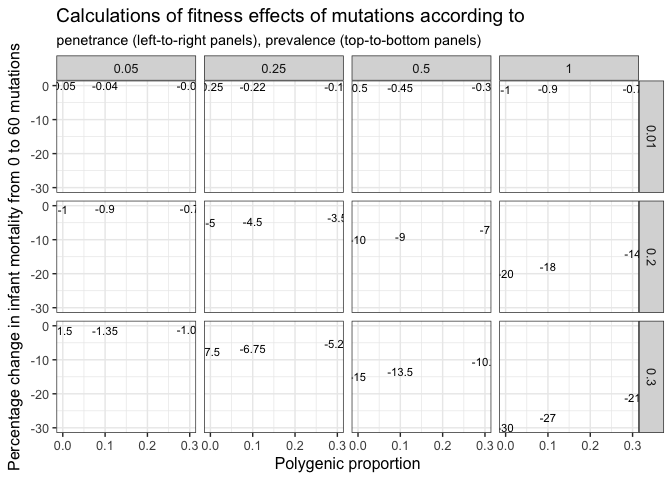

source("0__helpers.R")
library(brms)~4% reduction in fitness per generation in humans when the mean age of male ancestors of a given generation (e.g., father’s age, or mean age of two grandfathers or four great-grandfathers) changes from 30 to 40. The number of new mutations is increased by roughly one-third between father’s ages of 30 and 40 [5,10]. Assuming that their joint effect on fitness is increased similarly (i.e., no epistasis), and that all the observed fitness differences are due to new mutations, a 4% reduction in fitness in progeny of 40-year-old fathers, compared to the 30-year-olds, implies that the per-generation reduction in fitness due to new mutations under relaxed selection, ΔR is ~0.12 when males give birth at 30, and ~0.16 when they give birth at 40. The lower and upper boundaries of the 95% HPDI for the reduction in survival would yield ΔR of ~0.001 and ~0.25, respectively, when males give birth at 30. Are such high values of load associated with new mutations consistent with the available data? While de novo mutations are gradually becoming an acknowledged factor detrimental to fitness in humans, direct data on their population-level effect on fitness is lacking. Their effect on fitness is also hard to predict through their associations with disorders, because such associ- ations may be very diverse. For example, on the basis of the mutation rates in the father’s germ- line [10], the prevalence of diseases due to de novo loss-of-function single-nucleotide mutations in haploinsufficient genes has been estimated as ~100 to 1,000 per 100,000 births [71]. However, the contribution of recessive or non-coding mutations is unclear, as is how these values translate into population-level differences in fitness. ΔR can be also predicted indirectly as ΔR = Uhs, where U is the rate of deleterious mutations in a diploid genome per generation, and hs is the mean selection coefficient against a deleterious heterozygous mutation [72]. Unfortunately, both the fraction of the genome that is functional and the distribution of selection coefficients are known only very approximately. Consider first amino acid-changing mutations. The average de novo point mutation rate is 1.2 × 10-8 [10], the human genome carries ~3 × 107 coding sites, and approximately 75% of mutations at these sites change the encoded amino acid; therefore, a diploid genome acquires approximately 2 × 1.2 × 10-8 × 3 × 107 × 0.75 = 0.54 new amino acid-changing mutations per generation. The distribution of their fitness effects can be estimated from the distribution of allele frequencies at polymorphic sites; however, hs is very dependent on the fraction of strongly deleterious mutations, which is hard to estimate because such mutations contribute little to polymorphism [73,74]. For newly arising amino acid-changing mutations, the best-fitting gamma distribution of hs yielded hs = 0.043 (or less under a different choice of demographic model) [75]. More recent analyses using larger datasets, and accounting for complex demographic history, yielded hs = 0.029–0.058 in African Americans, and hs = 0.030 in European Americans. These data suggest that the reduction in fitness due to nonsynonymous mutations alone is ΔRP% 0.016–0.031. Predicting the contribution of non-coding mutations is complicated; assuming that 5% of the human genome is under selection [76,77], U ~= 2 × 1.2 × 10-8 × 3.2 × 109 × 0.05 = 3.84, with higher estimates for the fraction of genome under selection [78] yielding higher values of U. If mutations at functional sites in the entire genome are characterized by the same mean selection coefficients as nonsynonymous mutations at coding sites, these data imply ΔR as high as 0.11–0.22. This value is an overestimate if the mean selection against deleterious non-coding mutations is weaker; however, it doesn’t consider other mutation types such as indels, transposable elements insertions and microsatellite instabilities, which may contribute to fitness loss substantially [79]. Finally, ΔR can be also obtained, with many caveats, by extrapolating from mutation-accumulation experiments in model species [74]. This yields ΔR % 0.0013 (on the basis of experiments in nematodes), or ΔR % 0.018 (on the basis of experiments in Drosophila), assuming that the mean selection coefficient against deleterious mutations is the same in humans and in these species [74]. Altogether, our estimate of ΔR % 0.12 is probably too high to be solely explainable by the load of new mutations. For example, an increase in age from 30 to 40 corresponds to an expected increase of ~20 mutations [10]. If 5% of the genome is functional, then this corresponds to ~1 new deleterious mutation; 4% decrease in fitness over the same period yields the mean hs = 0.12 for this mutation, which seems too high. Still, the lower HDPI boundary ΔR % 0.001 would be compatible with the available data even if the effect comes exclusively from mutational sources, as it would imply mean hs = 0.001.
Hayward et al. obtained values for ΔR ranging from 0.016-0.031 for nonsynonymous mutations alone and values of ΔR ranging from 0.11-0.22 for all mutations.
Let the average paternal age at conception be 30, the average number of de novo mutations at this age 60, and the rate of increase be 2 mutations per year of paternal age. We can now estimate the per generation reduction in fitness, in the absence of selection as the change from a hypothetical individual with a paternal age of 0 (a mutation count of 0) and an individual with a paternal age of 30 (60 mutations). This is of course an oversimplification as the mutational process only becomes linear starting in puberty, but it works reasonably well here, because the regression slope in Kong et al. almost has its origin at zero. We prefer this oversimplification, because it easily allows us to compute credible intervals for the estimated parameters within the linear regression framework.
We have tried to build on Gratten et al. 2016’s model 4, adapting their model for psychiatric disease to infant mortality. We focused on a different parameter space than they, because e.g. the heritability of mortality and fertility is generally lower for fitness traits than for many psychiatric diseases (some of the correlations between number of siblings and number of children in our own data are almost zero, ranging from 0.02-0.10), and infant mortality incidence is of course much higher (in the pre-industrial populations) than the incidence of e.g. autism. Last but not least, we can set selection to 1, because the outcome is infant mortality. The obtained values are consistent with the obtained effects on infant mortality for some realistic regions of parameter space.
KVals <- c(0.30, 0.20, 0.01) # prevalence
cFactor <- c(0, 0.1, 0.3) # proportion of cases due to polygenic variation (distinct from c in models 1 and 2 where it is the proportion of non-genetic cases)
sVals <- c(1) # selection is 1, because the outcome is infant mortality
bVals <- c(1, 0.5, 0.25, 0.05) # penetrance
sim_results = data.frame(prevalence = numeric(0), polygenic_prop = numeric(0), selection = numeric(0), penetrance = numeric(0), prob_lowPA = numeric(0), prob_highPA = numeric(0), pct_chg = numeric(0))
for(i in 1:length(KVals)){
cVals <- KVals[i]*cFactor
for(j in 1: length(cVals)){
for(k in 1:length(sVals)){
for(l in 1:length(bVals)){
# Mutation component of the model
zm <- 1-cVals[j]/KVals[i] # proportion of cases due to de novo mutations (distinct from z in Model 3 which is the normal density of the liability threshold)
qm <- (KVals[i]*zm*bVals[l]*sVals[k])/60 # proportion of de novo mutations that contribute to risk (distinct from q in Model 3 which is the proportion of the genome contributing to the polygenic component of liability)
prob_lowPA = 1-KVals[i]
prob_highPA = 1-(KVals[i]+(60*qm))
pct_change = prob_highPA - prob_lowPA
new_row = nrow(sim_results)+1
sim_results[new_row, "prevalence"] = KVals[i]
sim_results[new_row, "polygenic_prop"] = cFactor[j]
sim_results[new_row, "selection"] = sVals[k]
sim_results[new_row, "penetrance"] = bVals[l]
sim_results[new_row, "prob_lowPA"] = prob_lowPA
sim_results[new_row, "prob_highPA"] = prob_highPA
sim_results[new_row, "pct_chg"] = round(pct_change*100,2)
}
}
}
}
DT::datatable(sim_results)ggplot(sim_results, aes(polygenic_prop, pct_chg)) + geom_text(aes(label = pct_chg), size = 3) + facet_grid(prevalence ~ penetrance) + ylab("Percentage change in infant mortality from 0 to 60 mutations") + ggtitle("Calculations of fitness effects of mutations according to", subtitle = "penetrance (left-to-right panels), prevalence (top-to-bottom panels)") + xlab("Polygenic proportion") + theme_bw(base_size = 12)
bind_rows("Krummhörn" =
readRDS("coefs/krmh/e1_survive1y.rds") %>% effect_of_avg_nr_of_mutations(),
"Québec" =
readRDS("coefs/rpqa/e1_survive1y.rds") %>% effect_of_avg_nr_of_mutations(),
"Historical Sweden" =
readRDS("coefs/ddb/e1_survive1y.rds") %>% effect_of_avg_nr_of_mutations(),
"20th-century Sweden" =
readRDS("coefs/swed/e1_survive1y.rds") %>% effect_of_avg_nr_of_mutations(),
.id = "Population") %>% filter(effect %in% c("percentage change"))## Population effect median_estimate ci_95
## 1 Krummhörn percentage change -3.81 [-6.55;-0.6]
## 2 Québec percentage change -2.28 [-3.07;-1.62]
## 3 Historical Sweden percentage change -3.02 [-4.53;-2.03]
## 4 20th-century Sweden percentage change -0.1 [-0.13;-0.07]
## ci_80
## 1 [-5.58;-1.94]
## 2 [-2.77;-1.84]
## 3 [-3.98;-2.32]
## 4 [-0.12;-0.08]bind_rows("Krummhörn" =
readRDS("coefs/krmh/m3_children_linear.rds") %>% effect_of_avg_nr_of_mutations(),
"Québec" =
readRDS("coefs/rpqa/m3_children_linear.rds") %>% effect_of_avg_nr_of_mutations(),
"Historical Sweden" =
readRDS("coefs/ddb/m3_children_linear.rds") %>% effect_of_avg_nr_of_mutations(),
"20th-century Sweden" =
readRDS("coefs/swed/m3_children_linear.rds") %>% effect_of_avg_nr_of_mutations(),
.id = "Population") %>% filter(effect %in% c("percentage change"))## Population effect median_estimate ci_95
## 1 Krummhörn percentage change -16.75 [-45.27;39.14]
## 2 Québec percentage change -7.29 [-14.37;1.22]
## 3 Historical Sweden percentage change -20.12 [-33.84;-2.99]
## 4 20th-century Sweden percentage change -14.68 [-16.79;-12.53]
## ci_80
## 1 [-37.85;13.63]
## 2 [-12.02;-1.85]
## 3 [-29.23;-9.66]
## 4 [-16.07;-13.26]readRDS("coefs/swed/r26_separate_parental_age_contributions.rds") %>% effect_of_avg_nr_of_mutations() %>% filter(effect %in% c("percentage change"))## effect median_estimate ci_95 ci_80
## 1 percentage change -6.51 [-11.2;-1.31] [-9.66;-3.3]